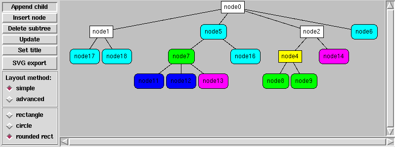
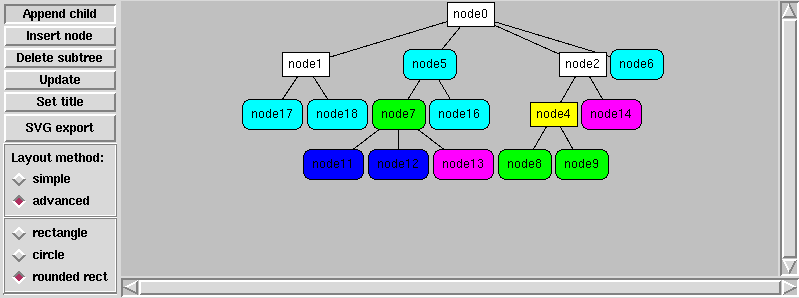

Ostatnio zmieniany: 22.03.2007
Contents
Przedstawione niżej metody służą do automatycznego rozmieszczania elementów graficznych reprezentujących węzły w drzewiastych strukturach danych. Dają całkiem przyzwoite wyniki.
Oczywiście istnieją już programy które to robią — jak choćby wyśmienity, darmowy Graphviz — ale też czasem z różnych względów nie zawsze można takowych użyć.
Właściwie w opisanych metodach chodzi wyłącznie o rozmieszczenie węzłów w poziomie. Natomiast odstępy pomiędzy kolejnymi poziomami należy „jakoś” ustalić. W przykładach wziąłem ok. 2-4 wysokości najwyższego węzła; z resztą byłoby dobrze dać końcowemu użytkownikowi jakąś możliwość wpływania na te odstępy.
Węzły są reprezentowane jakąś figurą geometryczną: kołem, prostokątem, prostokątem z zaokrąglonymi rogami, czy czymkolwiek innym — w opisywanych algorytmach nie ma to większego znaczenia, ponieważ brane są tylko skrajne wymiary figur (pudełko otaczające).
Węzły można łatwo dosuwać do innych — każdy ma metodę „ustaw minimalne x na określoną wartość” (setminx).
Z węzła można łatwo sięgnąć do rodzica oraz do pierwszego i ostatniego dziecka, a także do następnego/poprzedniego węzła na tym samym poziomie. Dla osób zaznajomionych z DOM zapewne będą znane takie nazwy własności węzła jak:
Zaleta:
Wady:
Dana jest globalna współrzędna XC. Wszystkie już rozmieszczone węzły znajdują się po lewej stronie prostej X = XC, natomiast jeszcze nie przetworzone na pewno zostaną umieszczone na prawo od niej.
Pojedynczy krok algorytmu przedstawia się następująco:
Wyznaczanie pozycji węzła.
- Po przetworzeniu wszystkich potomków środek węzła (na osi X) jest wyznaczany jako średnia arytmetyczna środków pierwszego i ostatniego dziecka.
- Jeśli natomiast węzeł jest liściem, to zostaje „dosunięty” do X — tzn. minimalna współrzędna pudełka otaczającego jest równa xmin = XC + s, gdzie s to pewna stała (dająca jakiś odstęp).
Następnie uaktualniana jest współrzędna graniczna XC — nie może być ona mniejsza niż xmax pudełka otaczającego poddrzew danego węzła, ani mniejsza niż xmax pudełka otaczającego samego węzła. W tym celu wystarczy zapamiętać xmax pudełka otaczającego poddrzewa zapisanego w lastChild oraz oczywiście wyznaczyć xmax pudełka otaczającego węzła — i wziąć maksimum obu wartości.
Poniżej funkcja Pythonowa, która realizuje ten algorytm (zadziwiająco krótka, prawda?).
def TreeLayout(node, x, space): assert node != None if node.childNodes: for child in node.childNodes: x = TreeLayout(child, x, space) node.cx = (node.firstChild.cx + node.lastChild.cx)/2 return max(x, node.maxx()) else: node.setminx(x + space) return node.maxx()
Uproszczona metoda 1. przystosowana do rysowania drzew binarnych; pochodzi z BSP-tree-tkdemo.py. Dla tych struktur metoda sprawuje się bardzo dobrze!
def BinaryTreeLayout(root, space, x=0.0): if root is None: return x root.width = 20 x = BinaryTreeLayout(root.left, space, x) x = BinaryTreeLayout(root.right, space, x+space) if root.left and root.right: root.cx = (root.left.cx + root.right.cx)/2 elif root.left: root.cx = roo.left.cx elif root.right: root.cx = roo.right.cx else: root.cx = x return root.cx + root.width/2 return x
Założenie: wszystkie węzły mają jednakową szerokość.
Jeśli znana jest maksymalna głębokość hmax drzewa binarnego można dość łatwo wyprowadzić wzory na położenie poszczególnych węzłów drzewa pełnego.
Można również później nanieść istniejące dowolne drzewo na taką strukturę — ma to tę zaletę, że gdy węzeł ma tylko jeden następnik wizualizowane są relacje: lewy, prawy syn; w przypadku pozostałych metod ta informacja jest tracona.
Położenie węzła zależy od dwóch parametrów:
Do wyznaczenia współrzędnej x środka węzła potrzebne są natomiast:
Przesunięcie na danym poziomie wynosi xs = (2d − 1) ⋅ S, natomiast odległość między węzłami na tym poziomie Sd = 2d + 1 ⋅ S. Ostatecznie współrzędna x wynosi:
x = xs + p ⋅ Sd
Można więc nie zagłębiając się poniżej danego węzła prawidłowo pozycjonować węzeł. Jedna podstawowa wada: uzyskane obrazy są bardzo szerokie.
Jak obliczyć p? Początkowa wartość wynosi 0 (w korzeniu), a przechodząc drzewo w głąb należy dopisywać na koniec bit o wartości 0 gdy skręcamy w lewo, albo 1 — gdy w prawo.
Przykładowy funkcja:
def do_layout(node, h, h_max, S, p):
if node is None:
return
d = h_max - h
x_s = (2**d - 1)*S
S_d = (2**(d+1))*S
node.cx = x_s + p*S_d
if node.left:
do_layout(node.left, h+1, h_max, S, 2*p)
if node.right:
do_layout(node.right, h+1, h_max, S, 2*p+1)
Przykładowy program tree_layout_demo2.py (Tkinter)
Przedstawiony niżej algorytm jest nieco bardziej złożony, ale daje lepsze rezultaty.
W pierwszym kroku wszystkie węzły na każdym poziomie są do siebie ściśle dosuwane, tzn. tak że kraniec jednego węzła jest blisko kolejnego (dodawany jest także pewien niewielki odstęp między nimi).
Następnie drzewo jest przeglądane poziomami od dołu — od poziomu przedostatniego aż do korzenia:
Węzły na każdym poziomie są przeglądane od lewej do prawej; liście są pomijane.
Jeśli węzeł ma dzieci, to wyznaczany jest jego pożądany środek xD (wyznaczam średnią środka pierwszego i ostatniego dziecka, można próbować inaczej). Teraz należy rozważyć aktualne położenie środka węzła (xC) względem obliczonego xD.
- Jeśli xC < xD (bardziej na lewo) to należy przesunąć w prawo ten węzeł oraz wszystkich jego sąsiadów znajdujących się na prawo — te węzły nie zostały jeszcze przetworzone. Przesunięcie wynosi dx = xD − xC.
- Jeśli xC > xD to nie można przesunąć tego węzła w lewo, mogą tam przecież znajdować się inne węzły z tego samego poziomu. Dlatego należy przesunąć w prawo o xC − xD jednostek całe poddrzewa tego węzła oraz wszystkich jego sąsiadów z prawej. Dlaczego nie wystarczy tylko tego węzła? Ponieważ na niższych poziomach węzły są już rozmieszczone i trzeba zachować ich wzajemne położenie.
Jak widać sam algorytm nie jest przesadnie skomplikowany. Należy tylko tak zorganizować drzewo, aby można było łatwo odczytać jego poziom oraz wszystkich sąsiadów z prawej. Ja po prostu utworzyłem listy węzłów dla każdego z poziomów, a węzły drzewa zawierają dodatkowe pole informujące o poziomie i położeniu na wspomnianej liście.
def TreeLayout2(node, space): if not node: # empty tree return class Dummy: pass d = Dummy() d.levels = [] def fill_rows(node, level): # add node to node's list assigned to certain level if len(d.levels) >= level+1: d.levels[level].append(node) else: # this level is visited first time d.levels.append([]) d.levels[level] = [node] # each node has info about it position in d.levels table node.index = len(d.levels[level])-1 node.level = level # place new node at end of the row if node.index > 0: prevnode = d.levels[node.level][node.index-1] node.setminx(prevnode.maxx() + space) else: node.setminx(0) # first node # process node's children for child in node.childNodes: fill_rows(child, level+1) def do_layout(): def translate_child(node, dx): for child in node.childNodes: translate_tree(child, dx) def translate_tree(node, dx): node.cx += dx for child in node.childNodes: translate_tree(child, dx) for row in reversed(d.levels[:-1]): for parent in row: if not parent.hasChildNodes(): # skip leafs continue # calucate desired center of node cx = (parent.firstChild.cx + parent.lastChild.cx)/2 dx = cx - parent.cx if cx > parent.cx: # move dx units right nodes at parent level, starting # from the parent node row1 = d.levels[parent.level] for i in xrange(parent.index, len(row1)): row1[i].cx += dx elif cx < parent.cx: # move -dx units right subtrees of parent # and it's neightbours on right row1 = d.levels[parent.level] for i in xrange(parent.index, len(row1)): translate_child(row1[i], -dx) fill_rows(node, 0) do_layout()
Ponieważ podczas testów powyższych algorytmów nie zawsze odpowiadało mi tworzenie losowych drzew, a jednocześnie opisywanie bezpośrednio w kodzie programu struktury drzewa jest mało przyjemne, dlatego napisałem prosty parser definicji drzew, który akceptuje składnię podobną do tej stosowanej w Graphviz.
# komentarz # powinien istnieć dokładnie jeden korzeń (nazwę korzenia # ustala argument funkcji parse_tree_def, domyślnie # jest to właśnie 'root' # 1. Tworzenie struktury drzewa: # węzły A i B są dziećmi korzenia root -> A root -> B # węzeł A ma trzy dzieci A -> C A -> D A -> E # a węzeł C jedno C -> F # 2. Określanie kształtu węzłów # tworzenie węzła: nazwa = kształt parametry rozdzielone przecinkami A = rectangle "b", 20, 30 B = rectangle "c", 20, 30 root = circle "a", 10 # kopiowanie definicje innych węzłów C = A D = A E = C F = A
Kolejność tworzenia dowiązań, definiowania kształtu węzłów, ani ich kopiowania nie gra roli.
Procedura zapamiętuje razem z węzłem jaki kształt został mu przypisany (łańcuch classname) i jakie podano parametry (lista parametrów parameters). Aplikacja powinna przetworzyć wynikowe drzewo na swoją własną reprezentację.
Przykładowa funkcja konwertująca:
def convert(node, drawing, level=0): """ Function converts tree returned by parse_tree_def into tree used in this demo: it parses parameters and creates nodes of given shape and size """ def create(classname, parameters): if classname.lower() == "circle": # "string", r return Circle(drawing, float(parameters[1])) elif classname.lower() == "rectangle": # "string", w, h return Rectangle(drawing, float(parameters[1]), float(parameters[2])) else: raise ValueError("Unknown node class '%c'" % classname) newnode = create(node.classname, node.parameters) newnode.cy = level*40 for child in node.childNodes: newnode.appendChild( convert(child, drawing, level+1) ) return newnode
tree_layout-tkdemo.py — program napisany w Tkinterze
 